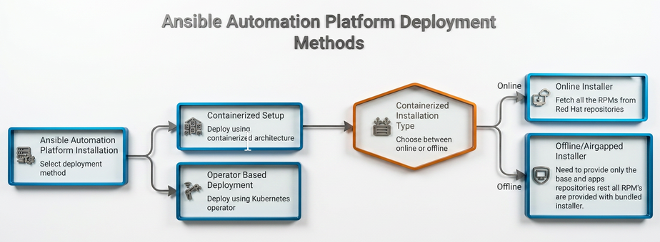

Introduction to Deployment
Red Hat Ansible Automation Platform (AAP) is an enterprise-grade automation solution designed to simplify and scale IT operations across diverse infrastructures. By centralizing the management of automation workflows, AAP enables organizations to maintain containerized environments, coordinate multi-cloud deployments, and enforce consistency across on-premise systems — all through a single, unified platform.
AAP’s core strengths include a web-based unified interface, role-based access control (RBAC) for secure operations, event-driven automation for real-time responses, and built-in analytics to track performance. Whether you are deploying in an air-gapped RHEL environment or running a cloud-native workload on OpenShift, AAP provides the flexibility, security, and scalability required by modern enterprises.
A pictorial demonstration shows the ways Ansible automation can be deployed:

What You Will Learn
This chapter provides a comprehensive foundation for understanding and deploying AAP 2.7. It covers the following topics:
-
Platform Components — Learn about the modular building blocks of AAP: Automation Controller, Automation Hub, Event-Driven Ansible, execution and hop nodes, and the supporting infrastructure (PostgreSQL, Redis, Automation Mesh).
-
Architecture Overview — Understand how a job moves through the platform, from user authentication at the Platform Gateway to execution inside a container on a worker node, including the new Metrics Service introduced for capacity planning.
-
Network Ports and Protocols — Review the required ports and default port assignments for each platform component to ensure proper firewall and network configuration.
-
Deployment Methods — Compare the two supported deployment models: the Containerized Installer (Podman on RHEL, suitable for air-gapped and full-control environments) and the Operator-based deployment (Kubernetes on OpenShift, for cloud-native, simplified operations).
-
On-Premise Installation — Explore the supported installation modes (RPM, Containerized, and Operator), understand tested topologies, and learn why the containerized approach is the recommended future direction.
-
Deployment Best Practices — Apply capacity-planning guidelines from development (8 GB RAM) to large production (64+ GB RAM), design high-availability architectures, and implement backup and regular maintenance routines.
-
Security Best Practices — Protect your deployment using Ansible Vault for secrets, RBAC with least privilege, TLS 1.2+ enforcement, firewall hardening, and audit log integration with SIEM systems.
-
Operational Best Practices — Organize resources by environment and team, manage automation content in Git with versioned Execution Environments, monitor with Prometheus and Grafana, and maintain thorough platform documentation.